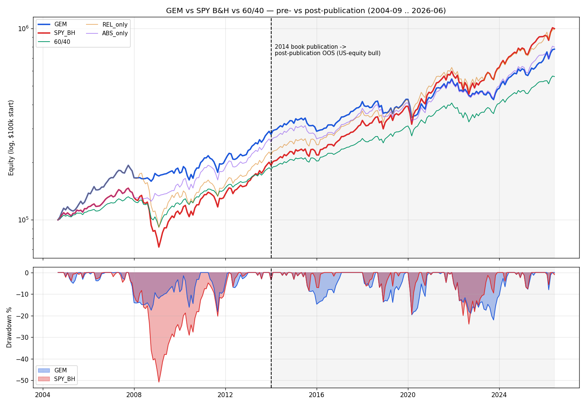

Gary Antonacci 的雙動能規則極簡、20 年僅 33 次換倉，2008 GFC 完美避開(全年 -1.30% vs SPY -36.97%)曾讓它全面壓制買進持有。 但把樣本切在 2014 年(論文 2012／專書 2014 發表)之後：發表後(2014~2026)GEM 的 CAGR、Sharpe、Calmar 三個維度全輸 SPY 買進持有，只剩最大回撤微幅小勝——優勢消失。 全樣本看似仍勝的風險調整(Calmar 0.45 vs 0.22)整包來自 2008 那一次避崩盤；剝離後在 2010 之後的 V 轉多頭裡，慢速 12 個月動能的絕對動能閘門每次都賣在低點、踏空反彈。 定位：一個發表後未存活的防守型經典，供對照而非配置。
發表前(2004-09~2013)GEM 全面壓制 SPY B&H(CAGR 12.09% vs 7.78%、Sharpe 0.88 vs 0.41、MDD -18.2% vs -50.8%)——但這優勢幾乎全來自 2008 避開崩盤。 發表後逆轉:GEM CAGR 8.23% 落後 SPY 13.72% 達 5.5pp／年，Sharpe(0.49 vs 0.80)、Calmar(0.37 vs 0.57)雙輸，MDD 僅小勝(-22.0% vs -23.9%);連 60/40 的 Sharpe(0.74)都贏過 GEM。
| 期間 | 策略 | CAGR | MDD | Sharpe | Calmar |
|---|---|---|---|---|---|
| 發表前 2004-09~2013 | GEM 雙動能 | +12.09% | -18.22% | 0.88 | 0.66 |
| SPY B&H | +7.78% | -50.78% | 0.41 | 0.15 | |
| 60/40 SPY/AGG | +7.01% | -30.57% | 0.60 | 0.23 | |
| 發表後 2014~2026 | GEM 雙動能 | +8.23% | -22.01% | 0.49 | 0.37 |
| SPY B&H | +13.72% | -23.93% | 0.80 | 0.57 | |
| 60/40 SPY/AGG | +9.18% | -20.34% | 0.74 | 0.45 | |
| 敏感度 2015~2026 | GEM 雙動能 | +7.79% | -22.01% | 0.43 | 0.35 |
| SPY B&H | +13.75% | -23.93% | 0.77 | 0.57 | |
| 60/40 SPY/AGG | +9.08% | -20.34% | 0.69 | 0.45 | |
| 全樣本 2004-09~2026 | GEM 雙動能 | +9.86% | -22.01% | 0.65 | 0.45 |
| SPY B&H | +11.16% | -50.78% | 0.63 | 0.22 | |
| 60/40 SPY/AGG | +8.25% | -30.57% | 0.68 | 0.27 |
| 進場(首個持債月) | 出場(末個持債月) | 月數 | 期間 SPY | 期間 AGG | 閘門相對 SPY | 判定 |
|---|---|---|---|---|---|---|
| 2015-10 | 2015-10 | 1 | +8.51% | +0.07% | -8.44% | 假訊號 |
| 2016-02 | 2016-03 | 2 | +6.64% | +1.77% | -4.87% | 假訊號 |
| 2019-01 | 2019-02 | 2 | +11.51% | +0.80% | -10.71% | 假訊號 |
| 2020-04 | 2020-05 | 2 | +18.07% | +2.40% | -15.66% | 假訊號 |
| 2022-05 | 2023-04 | 12 | +2.66% | -0.29% | -2.96% | 假訊號 |
| 2023-06 | 2023-06 | 1 | +6.48% | -0.37% | -6.85% | 假訊號 |
GEM = 相對動能(SPY vs 國際腿)× 絕對動能(轉債閘門)。分開量各段相對 SPY 買進持有的年化拖累(正值＝拖累報酬、負值＝貢獻報酬):
| 期間 | GEM − SPY | 絕對動能閘門拖累 | 相對動能腿拖累 |
|---|---|---|---|
| 發表前 2004-09~2013 | +4.31pp | -3.22pp/年 | -1.36pp/年 |
| 發表後 2014~2026 | -5.50pp | +4.48pp/年 | +1.20pp/年 |
| 全樣本 2004-09~2026 | -1.29pp | +1.17pp/年 | +0.09pp/年 |

GEM 落在 McLean-Pontiff 發表後衰減的最壞象限：美股、純價量、最高流動性。
其絕對動能腿正押在最高流動性的美股 beta 上，發表前優勢高度依賴崩盤樣本；剝離崩盤後在趨勢多頭裡被買進持有支配。這與 edge 存活研究一致：衰減對「in-sample 太漂亮」的象限最重。
對照兩個同為動能／趨勢家族的頁面，看「哪種機制在 OOS 存活 vs 死亡」:
| 配置 | CAGR | MDD | Sharpe | Sortino | Calmar | Vol | 換倉 | 期末 |
|---|---|---|---|---|---|---|---|---|
| GEM 雙動能 — 本頁系統 | +8.63% | -21.54% | 0.68 | 0.97 | 0.40 | 12.63% | 33 | $542K |
| 純相對動能(無絕對動能避險) | +10.01% | -52.71% | 0.64 | 0.89 | 0.19 | 15.75% | 21 | $695K |
| SPY Buy & Hold | +11.17% | -50.78% | 0.73 | 0.99 | 0.22 | 15.39% | — | $862K |
| 60/40 SPY/AGG(年度再平衡) | +8.30% | -30.56% | 0.85 | 1.15 | 0.27 | 9.79% | — | $506K |
| # | 高點 | 低點 | 回到前高 | 深度 | 下跌期間 | 修復期間 |
|---|---|---|---|---|---|---|
| 1 | 2021-12 | 2023-10 | 2024-06 | -21.54% | 22 個月 | 8 個月 |
| 2 | 2020-01 | 2020-03 | 2020-12 | -20.05% | 2 個月 | 9 個月 |
| 3 | 2011-04 | 2011-09 | 2012-03 | -18.64% | 5 個月 | 6 個月 |
| 4 | 2007-10 | 2008-10 | 2010-12 | -17.80% | 12 個月 | 26 個月 |
| 5 | 2015-07 | 2016-01 | 2017-02 | -15.12% | 6 個月 | 13 個月 |
| 序列 | 月均 | 月中位 | 正月比例 | 最差月 | 最佳月 |
|---|---|---|---|---|---|
| GEM 雙動能 | +0.76% | +0.92% | 62.3% | -13.17% | +11.49% |
| SPY B&H | +0.99% | +1.51% | 65.2% | -16.04% | +13.36% |
| 60/40 SPY/AGG | +0.71% | +1.06% | 65.2% | -10.08% | +8.04% |
| 事件 | GEM | SPY B&H | 差距 |
|---|---|---|---|
| 2008 GFC | +3.51% | -37.39% | +40.90pp |
| 2011 歐債 | -9.30% | -7.08% | -2.22pp |
| 2015 中國股災 | -14.55% | -7.02% | -7.53pp |
| 2018 Q4 | -13.82% | -13.64% | -0.18pp |
| 2020 COVID | -11.69% | -1.37% | -10.32pp |
| 2022 通膨熊 | -14.51% | -13.16% | -1.35pp |
| 期間 | GEM | SPY B&H | 差距 |
|---|---|---|---|
| 全期 20 年 | +8.67% | +11.18% | -2.51pp |
| 近 15 年 | +8.86% | +14.19% | -5.33pp |
| 近 10 年 | +9.88% | +15.55% | -5.67pp |
| 近 5 年 | +9.73% | +14.04% | -4.31pp |
| Year | GEM 雙動能 | 純相對動能 | SPY B&H | 60/40 |
|---|---|---|---|---|
| 2006 | +16.48% | +16.48% | +12.50% | +8.77% |
| 2007 | +9.48% | +9.48% | +5.17% | +5.76% |
| 2008 | -1.30% | -37.20% | -36.97% | -19.75% |
| 2009 | +6.35% | +25.12% | +26.70% | +18.61% |
| 2010 | +6.99% | +6.99% | +15.07% | +11.31% |
| 2011 | -0.85% | -0.85% | +1.79% | +4.38% |
| 2012 | +11.26% | +15.67% | +15.90% | +10.78% |
| 2013 | +28.45% | +28.45% | +32.53% | +18.64% |
| 2014 | +13.45% | +13.45% | +13.45% | +10.23% |
| 2015 | -7.52% | +1.19% | +1.19% | +0.85% |
| 2016 | +6.80% | +12.00% | +12.00% | +8.37% |
| 2017 | +20.17% | +20.17% | +21.80% | +14.58% |
| 2018 | -8.01% | -7.83% | -4.64% | -2.31% |
| 2019 | +18.02% | +31.34% | +31.34% | +21.73% |
| 2020 | +1.69% | +18.41% | +18.41% | +14.08% |
| 2021 | +24.11% | +24.11% | +28.82% | +16.61% |
| 2022 | -16.57% | -18.43% | -18.26% | -16.43% |
| 2023 | +5.84% | +19.74% | +26.24% | +17.82% |
| 2024 | +24.97% | +24.97% | +24.97% | +15.46% |
| 2025 | +13.33% | +13.33% | +17.77% | +13.59% |
| 2026 | +15.76% | +15.76% | +11.57% | +7.26% |
每月底依據 12 個月動能決定下月持倉：
1. 相對動能:比較 SPY(美國)vs ACWX(國際)過去 12 個月報酬，選較強者。
2. 絕對動能:若勝出市場的 12 個月報酬 > T-Bill 12 個月累積報酬，持有股票；
否則切換到 AGG 債券避險。
單邊交易成本 0.1%(換倉計一賣一買 0.2%),初始 $100,000(規格定義)。
ACWX 於 2008-03 上市，之前用 EFA 報酬拼接，以延續國際價格序列。
對照組「純相對動能」= 同規則但拿掉絕對動能避險(永遠持有 SPY/ACWX 較強者)。
| 月份 | 賣出 | 買入 | SPY 12M 動能 | ACWX 12M 動能 | T-Bill 12M | 換倉後資產 |
|---|---|---|---|---|---|---|
| 2006-01 | 現金(起始) | ACWX 國際 | +9.81% | +22.19% | 3.37% | $99.9K |
| 2008-01 | ACWX 國際 | AGG 債券 | -2.67% | -0.07% | 4.02% | $120.2K |
| 2009-09 | AGG 債券 | ACWX 國際 | -6.51% | +1.64% | 0.17% | $130.3K |
| 2010-04 | ACWX 國際 | SPY 美股 | +38.63% | +38.21% | 0.11% | $133.8K |
| 2011-04 | SPY 美股 | ACWX 國際 | +17.11% | +20.11% | 0.13% | $156.4K |
| 2011-07 | ACWX 國際 | SPY 美股 | +19.64% | +15.13% | 0.10% | $145.4K |
| 2012-05 | SPY 美股 | AGG 債券 | -0.49% | -20.64% | 0.04% | $149.9K |
| 2012-06 | AGG 債券 | SPY 美股 | +5.30% | -15.05% | 0.05% | $149.6K |
| 2012-12 | SPY 美股 | ACWX 國際 | +15.90% | +17.56% | 0.08% | $157.8K |
| 2013-01 | ACWX 國際 | SPY 美股 | +16.52% | +12.17% | 0.08% | $162.0K |
| 2015-09 | SPY 美股 | AGG 債券 | -0.82% | -11.89% | 0.01% | $217.2K |
| 2015-10 | AGG 債券 | SPY 美股 | +5.19% | -5.91% | 0.02% | $217.0K |
| 2016-01 | SPY 美股 | AGG 債券 | -0.87% | -10.72% | 0.07% | $202.9K |
| 2016-03 | AGG 債券 | SPY 美股 | +1.61% | -9.64% | 0.11% | $205.7K |
| 2017-05 | SPY 美股 | ACWX 國際 | +17.44% | +18.10% | 0.48% | $247.4K |
| 2018-05 | ACWX 國際 | SPY 美股 | +14.36% | +9.49% | 1.34% | $270.4K |
| 2018-12 | SPY 美股 | AGG 債券 | -4.64% | -13.81% | 1.94% | $251.1K |
| 2019-02 | AGG 債券 | SPY 美股 | +4.54% | -6.14% | 2.08% | $253.1K |
| 2020-03 | SPY 美股 | AGG 債券 | -7.03% | -15.86% | 1.64% | $238.1K |
| 2020-05 | AGG 債券 | SPY 美股 | +12.81% | -3.53% | 1.27% | $243.3K |
| 2021-05 | SPY 美股 | ACWX 國際 | +40.24% | +42.25% | 0.06% | $340.5K |
| 2021-06 | ACWX 國際 | SPY 美股 | +41.04% | +35.84% | 0.05% | $335.0K |
| 2022-04 | SPY 美股 | AGG 債券 | +0.03% | -11.48% | 0.17% | $326.0K |
| 2023-04 | AGG 債券 | ACWX 國際 | +2.66% | +4.48% | 3.51% | $324.1K |
| 2023-05 | ACWX 國際 | AGG 債券 | +2.91% | -1.22% | 3.87% | $311.3K |
| 2023-06 | AGG 債券 | SPY 美股 | +19.49% | +12.18% | 4.16% | $309.5K |
| 2023-10 | SPY 美股 | ACWX 國際 | +9.99% | +12.67% | 4.90% | $293.5K |
| 2023-11 | ACWX 國際 | SPY 美股 | +13.71% | +7.60% | 4.99% | $317.2K |
| 2025-04 | SPY 美股 | ACWX 國際 | +11.88% | +12.52% | 5.24% | $392.3K |
| 2025-05 | ACWX 國際 | SPY 美股 | +13.18% | +13.05% | 5.24% | $408.9K |
| 2025-06 | SPY 美股 | ACWX 國際 | +14.97% | +18.04% | 5.24% | $427.8K |
| 2025-07 | ACWX 國際 | SPY 美股 | +16.18% | +14.21% | 5.24% | $428.2K |
| 2025-10 | SPY 美股 | ACWX 國際 | +21.40% | +25.10% | 5.24% | $462.4K |